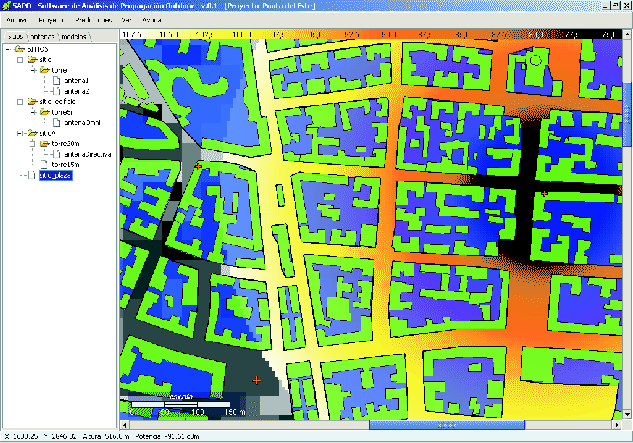

Siguiente: Creación de una red
Subir: Descripción general de SAPO
Anterior: ¿Qué es un proyecto
Índice General
Previo a la realización del cálculo de la predicción de potencia, es
necesario ingresar al software la información topográfica de la zona
en cuestión, así como los datos de cómo se conforma la red. Lo
primero puede hacerse con diferentes niveles de detalle, de acuerdo
a la base de datos que disponga el usuario, aunque se obtendrán
mejores resultados cuanto más información del entorno se posea.
Sobre todo en un entorno urbano, puede ser muy útil la
especificación detallada de las edificaciones, ya que como se vio en
las secciones anteriores, las mismas tienen gran influencia en la
propagación. Es así que se pueden especificar tres tipos de datos:
- Datos de Altura de terreno. Consiste en un mapa de elevaciones,
que especifique para toda el área geográfica los valores de altura sobre el nivel
del mar. Cuanto mayor sea la resolución de dicho mapa, mayor
exactitud podrá obtenerse en los resultados. Esta información es
necesaria para la aplicación de todos los modelos, por lo cual es de
carácter obligatorio.
- Datos de trazado de manzanas. Consiste en la información de
la distribución de las manzanas y calles a lo largo del territorio (se considera que
el límite entre las manzanas y las calles es el límite de las edificaciones,
y no el cordón de la vereda). Estos datos son requeridos por ciertos modelos, por ejemplo,
aquellos que incluyan en sus cálculos la orientación de la calle en
relación a la dirección de máxima propagación de la antena
radiobase, o la distancia del punto en cuestión a las esquinas más
cercanas.
- Datos de edificaciones. Consiste en la información de ubicación,
forma, disposición y altura de las edificaciones presentes. Cierto
modelo de propagación puede requerir de dicho nivel de detalle para
arrojar resultados confiables. Sin embargo, en otros casos, a falta
de información precisa, puede ingresarse un único edificio por
manzana que abarque toda el área de la misma y tenga como altura la
altura promedio de todas las edificaciones u otro valor que pueda
ser representativo.
Figura 7.1:
Pantalla principal de SAPO
|

|
Esta información es importada al programa desde archivos (los
formatos soportados se describirán en el capítulo
9), y en el caso de los datos de edificaciones
existe también la posibilidad de ingresarlos mediante una interfaz
gráfica incluida en SAPO. Una vez cargada, la información
es almacenada en diferentes niveles o capas y desplegada en un mapa
digital (ver figura 7.1). En todo momento el usuario
tiene la posibilidad de ver u ocultar cualquiera de las capas que se
despliegan en pantalla. Además aparece una barra indicativa de la
escala, así como la posición y altura del punto sobre el cual está
posicionado el ratón en cada instante.
SAPO trabaja con coordenadas planas (proyectadas), como por
ejemplo coordenadas UTM7.1, aunque no tienen por qué ser necesariamente
globales. Como unidad de distancia se utiliza el metro.
Siguiente: Creación de una red
Subir: Descripción general de SAPO
Anterior: ¿Qué es un proyecto
Índice General
SAPO